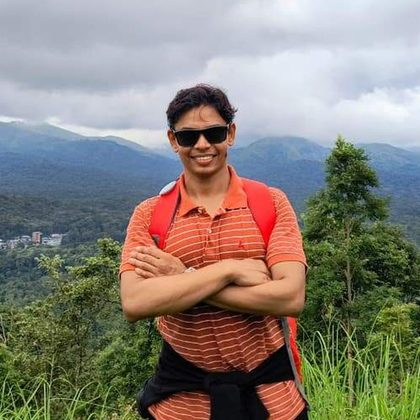

ShubhMittal
Fig. 1 — stellar absorption spectrumIncoming Doctoral Student
Astronomical Institute, Czech Academy of Sciences
I study stars through their light. From October 2026 I join the OCEANS project in Prague, hunting Luminous Blue Variables across ZTF and LSST time-domain data. Before that, a year at IUCAA on high-resolution spectroscopy of Type II Cepheids — measuring abundances, characterising atmospheres, and building open-source tools to keep that analysis reproducible.

Obs. 202601 — Research
Research Experience
Massive stars and transients in wide-field time-domain surveys, high-resolution spectroscopy of variable stars — and the open-source software that keeps both kinds of analysis reproducible.
Luminous Blue Variables in Large Sky Surveys
Using astronomical alert brokers and machine learning to identify LBV candidates in ZTF and LSST time-domain data. Doctoral work with the OCEANS collaboration, beginning October 2026.
High-Resolution Spectroscopy of Type II Cepheids →
Metallicity and elemental abundance measurements from SALT and VLT high-resolution data, calibrating the first rung of the cosmic distance ladder.
PySpecTools →
An automated Python pipeline for reducing and analysing echelle stellar spectra — sky subtraction, continuum normalisation, heliocentric correction, order merging and radial-velocity estimation. Stellar atmosphere parameters in development.
Prompt Emission in Gamma-Ray Bursts →
Spectral analysis of GRB prompt emission, investigating the origin of the observed non-thermal radiation. MSc thesis work at IISER Thiruvananthapuram.
02 — Publications
Papers
Loading publications…
03 — Models
Objects I work on
Interactive 3D models of the objects I study. Click to learn more about my research.
Massive Star shedding its outer-layers →
Massive evolved stars that show unpredictable and sometimes dramatic variations in both their spectra and their brightness. They undergo giant eruptions with substantial mass loss, throwing off shells of their own material. — Wikipedia
Mass lossGamma-Ray Burst →
Extremely energetic events in distant galaxies, the brightest and most powerful class of explosion in the universe. Most are a narrow beam of intense radiation released as a rapidly rotating, high-mass star collapses into a black hole. — Wikipedia
Collapsar04 — Academic Journey
Where I've been
From October 2026
Doctoral Student
Astronomical Institute, Czech Academy of Sciences & Charles University, Prague
Searching for Luminous Blue Variables in ZTF and LSST surveys, with the OCEANS collaboration. Advisor: Dr. Olga Maryeva.
2025 — 2026
Junior Research Fellow
IUCAA — Inter-University Centre for Astronomy & Astrophysics, Pune
High-resolution spectroscopy of Type II Cepheids using SALT and VLT data. Advisor: Dr. Anupam Bhardwaj.
2023 — 2025
MSc Physics
IISER Thiruvananthapuram
Thesis: “Analysis of Prompt Emission in Gamma-Ray Bursts.”
2020 — 2023
BSc (Hons) Physics
University of Delhi
Foundations in classical and quantum mechanics, and mathematical physics.
05 — Beyond Research
Off the telescope
Born and raised in Uttarakhand, which is probably why I say yes to every trek. Photographs from the road and the night sky live on the adventures page.
Trekking
The one plan I can never say no to. Most of my time off is spent covering hills and landscapes.
Music
Classical, rock or blues — different times call for different music.
Cooking & Sport
I cook new dishes and fail at some of them. The gym and cricket handle the consequences.
06 — Contact
Get in touch
Always open to collaborations, research enquiries, or a conversation about the cosmos.